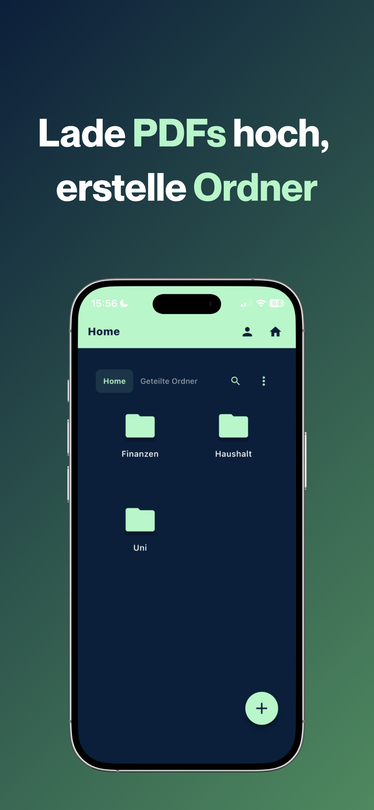
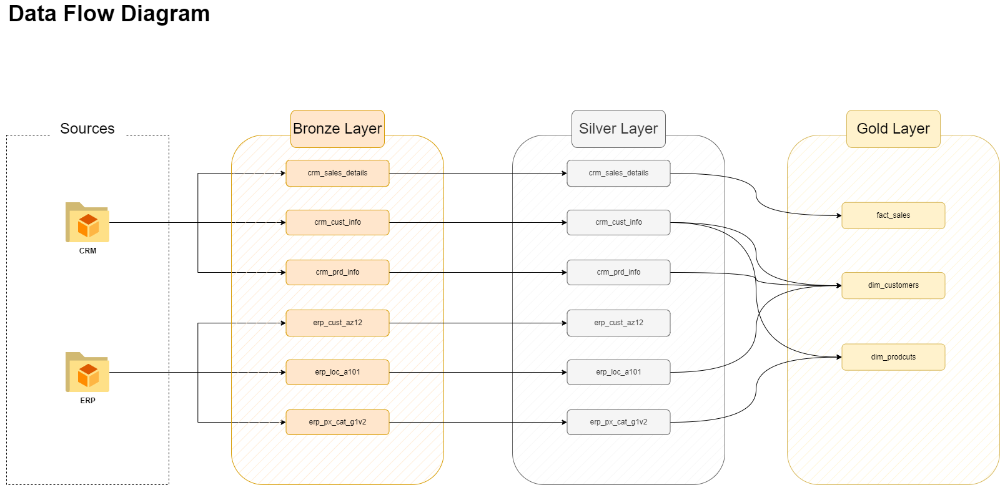
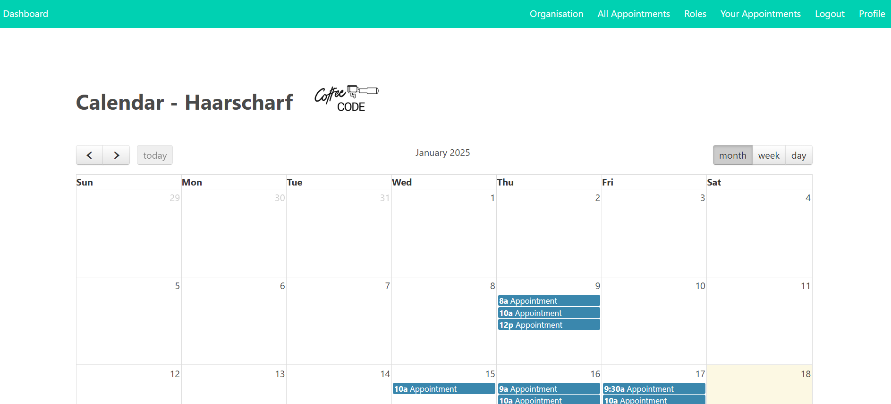
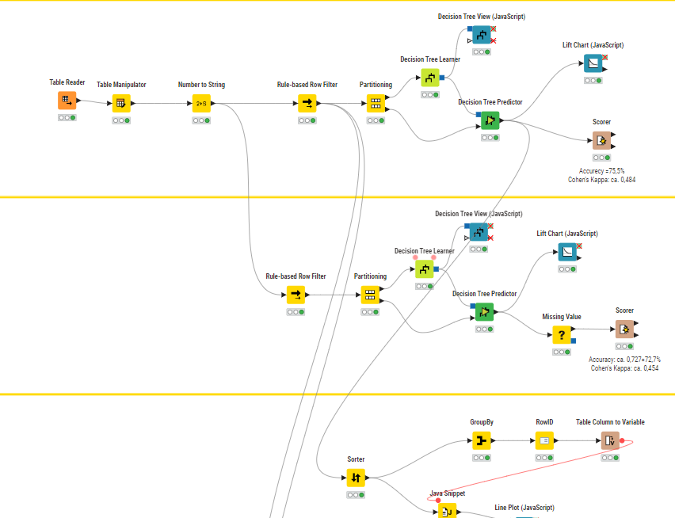
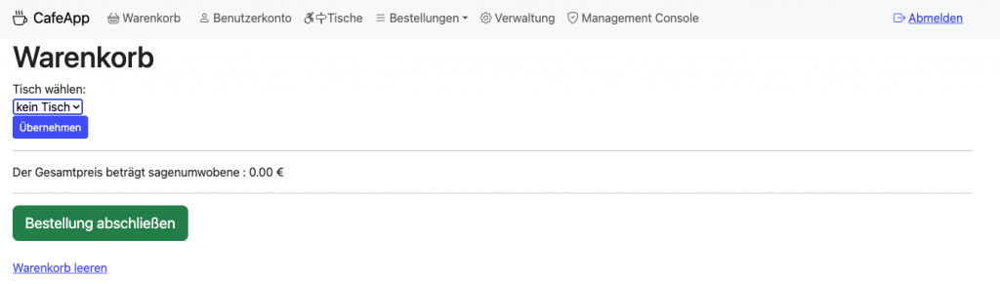
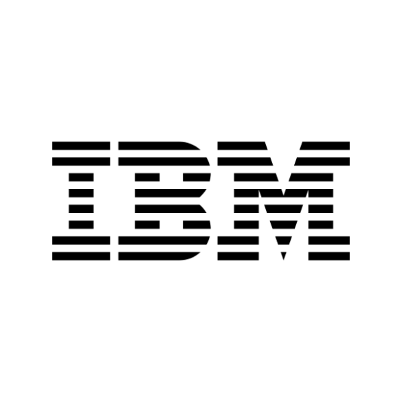

PaprFree
Website ansehenMein Startup-Fokusprojekt: PaprFree digitalisiert dokumentenlastige Abläufe und macht Workflows schneller, transparenter und deutlich papierärmer.
Data, Product & People
Ich baue datengetriebene Produkte mit Fokus auf echten Mehrwert: klar strukturiert, modern umgesetzt und immer mit Blick auf die Nutzer:innen.
Von Data Science über App-Ideen bis zum Startup-Ansatz – mein Ziel ist es, aus Ideen schnell Produkte zu machen, die im Alltag wirklich helfen.
Bachelorabschluss – Note 1,6
Fundierte analytische Ausbildung mit Schwerpunkt auf datenorientierter Problemlösung und praxisnahen Projekten.
Werkstudium bei Sinovo
Mitarbeit an digitalen Prozessen und operativen Lösungen – Schnittstelle zwischen Technik und Business.
Praktikum bei KPMG
Einblicke in datenbasierte Beratung, strukturierte Analyse und professionelle Kundenarbeit im Unternehmensumfeld.
Berufserfahrung bei Dymatrix
Arbeit an datengetriebenen Use Cases mit Fokus auf umsetzbare Insights und nachhaltige Produktentwicklung.
Neu sortiert nach Produktnähe, Wirkung und technischem Scope.

Mein Startup-Fokusprojekt: PaprFree digitalisiert dokumentenlastige Abläufe und macht Workflows schneller, transparenter und deutlich papierärmer.

Konzeption und Dokumentation eines vollständigen Data-Warehouse-Setups inkl. Architektur, Modellierung und Umsetzung.
GitHub Repository
Terminmanagement für Dienstleister mit klarem UX-Fokus – vom Booking bis zur effizienten Tagesplanung.

Target-Group-Analyse auf Basis eines Decision-Tree-Modells mit klaren Segmentierungslogiken für Marketingentscheidungen.

Leichtgewichtige App-Idee mit Fokus auf nutzerfreundliche Prozesse und stabilem, pragmatischem Feature-Set.

IBM Data ScienceVertiefung in Data-Science-Methoden, Modellierung und praktischer Datenanalyse.
Zertifikat öffnenPraxisnahe Analytics-Ansätze von Datenaufbereitung bis Reporting und Interpretation.
Zertifikat öffnen